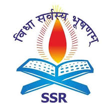

.png)
| Document Category | Number |
|---|---|
| 1. Books available for loan | 3,80,00,000+ |
| 2. list of Journals | 1,00,000+ |
| 3. Full-text E-journals | 5,000+ |
| 4. Thesis/Dissertations | 1,00,000+ |
It was started at the India International Centre Library in January 1988 and was registered as a society in 1992.DELNET has been actively engaged with the compilation of various Union Catalogues of the resources available in member libraries. It has already created the union catalogue of Books, Union List of current periodicals, Union Catalogue of periodicals, CD-ROM database of Indian specialists, database of periodical Articles, Union List of Video Recordings, Urdu Manuscripts’ database, database of theses and dissertations, sample database of language publications using GIST technology and serval other databases.
| User ID : | Password : |
|---|---|
| dnssrcp | ssr7190 |
List Programme: The project entitled “national Library and Information Services Infrastructure for Scholarly Content (N-list)’, being jointly executed by the E-ShodhSindhu Consortium. INFLIBNET Centre and the INDEST – AICTE Consortium, IIT Delhi provides for (cross-subscription to e-Resources subscribed by the two consorts is, i.e. subscription to INDEST-AICTE resources for universities and E-ShodhSindhu resources for technical institutions; and ii) access to selected E-resources to colleges. This programme is very useful both for students and faculty, its provides 31, 35000 +e-books and 6000+ e-journals.
How To Use N-LIST• To subscribe and provide access to selected E-ShodhSindhu E-Resources o technical Institutions(IITs,IISc,IISERs and monitor its usage)
• To subscribe and provide access to selected E-Resources to 6000 Got./Govt.-aided colleges and monitor its usage.
• To act as a monitoring agency for colleges and evaluate, promote, impart training and monitor all activities involved in the process of providing effective and efficient access to E-resources to colleges.
• To subscribe and provide access to selected INDEST E-Resources to selected universities and monitor its usage.
| Students User I.D : |
|---|
| ssracsstudent2019@gmail.com |
| Password : |
|---|
| Student@1234 |
| Faculty User I.D : | Password : |
|---|---|
| ssracs@gmail.com | faculty2006 |
The National Digital library of India is a virtual repository of learning resources which is not only just a repository with a search/browse facilities but also provides a host of services containing textbooks, articles, videos, audio books, lectures, simulations, fiction and all other kinds of learning media for the learner/user community. It is a project under Ministry of Education, Government of India, through its National Mission on Education through Information and Communication Technology (NMEICT). The objective is to collect and collate metadataand provide full text indexfrom several national and international digital libraries, as well as other relevant sources. The NDLI provides free of cost access to many books and designed to hold content of any languages and provides interface support for 10 most widely used Indian languages. It is developed, operated and maintained by the Indian Institute of Technology Kharagpur.
Google Scholaris a freely accessible web search enginethat indexes the full text or metadata of scholarly literature across an array of publishing formats and disciplines. Released in beta in November 2004, the Google Scholar index includes peer-reviewed online academic journals and books, conference papers, theses and dissertations, preprints, abstracts, technical reports, and other scholarly literature, including court opinions and Google Scholar uses a web crawler, or web robot, to identify files for inclusion in the search results. For content to be indexed in Google Scholar, it must meet certain specified criteria. An earlier statistical estimate published in PLOS One using a mark and recapture method estimated approximately 79–90% coverage of all articles published in English with an estimate of 100 million. This estimate also determined how many documents were freely available on the internet. Google Scholar has been criticized for not vetting journals and for including predatory journals in its index.
The "directory of open access books" is a discovery service for open access books. DOAB provides a searchable index to peer reviewed monographs and edited collections published under an open access license, with links to the full texts of the publications at the publisher’s website or Its aims to provide a reliable source for open access books metadata, open access book publishers and aims to enhance dissolvability and maximize dissemination and visibility. Its services include the collection and provision of information on publishers’ peer review practices, encouraging best practice for open access book publishers and offering certification services.
The "Directory of Open Access Journals(DOAJ) "is a websitethat hosts a community-curated list of open access journals, maintained by Infrastructure Services for Open Access (IS4OA).It was launched in 2003 with 300 open access journals. The project defines open access journals as scientific and scholarly journals making all their content available for free, without delay or user-registration requirement, and meeting high quality standards, notably by exercising peer review or editorial quality control. DOAJ defines those as open access journals where an open license is used so that any user is allowed immediate free access to the works published in the journal and is permitted to read, download, copy, distribute, print, search, or link to the full texts of the articles, or use them for any other lawful The mission of DOAJ is to “increase the visibility, accessibility, reputation, usage and impact of quality, peer-reviewed, open access scholarly research journals globally, regardless of discipline, geography or language.
More than 10,000 open access (OA) books from 125+ publishers including Brill, Cornell University Press, University College of London, and University of California Press, are now available at no cost to libraries or users. It is a digital library of academic journals, books, and primary sources founded in 1994.Originally containing digitized back issues of academic journals, it now encompasses books and other primary sources as well as current issues of journals in the humanities and social It provides full-text searches of almost 2,000 journals. Most access is by subscription but some of the site is public domain, and open access content is available free of charge.
Open access (OA) refers to digital content that is available free of charge for everyone. Originally associated only with scholarly journals that published free online, the concept has been extended to other types of content such as eBooks and media. In some cases OA content may also be free of most copyright and licensing Free eBooks! We’ve collected some of the best sites on the Web that offer open access or free eBooks available to anyone with Internet access. Some can be downloaded; some have to be read online.
Open Library is an online project intended to create “one web pagefor every book ever published”. Created by Aaron Swartz Brewster Kahle Alexis Rossi, Anand Chitipothu, and Rebecca Malamud, Open Library is a project of the Internet Archive a nonprofit organization. It has been funded in part by grants from the California State Library and the Kahle/Austin Foundation. Open Library provides online digital copies in multiple formats, created from images of many public domain, out-of-print, and in- print Open library have over 20 million records from a variety of large catalogs as well as single contributions, with more on the way. Open Library is an open project: the software is open, the data are open, and the documentation is open. Whether you fix a type, add a book, or write a widget it’s all
The University Library is committed to supporting the academic research needs of students, faculty and staff. The Library does this by providing timely access to quality, scholarly and appropriate information resources and library services, such as reference, information literacy instruction, and inter-library loan services. Students also have access to highly qualified and experienced Library staff. Research Databases– Access to A to Z list containing thousands of journals, magazines, newspapers, e-Books, dissertations, financial data, and other information resources available in the Library. Service of OAPEN Foundation based at the National Library in The Hague. Database contains more than 5,000 academic, peer-reviewed books from 163 publishers.
The library of congress is the largest library in the world with millions of books, films and video, audio recordings, photographs, newspapers, maps and manuscripts in its collections. The library is the main research arm of the U.S. congress and the home of the U.S. copyright office. The library preserves and provides access to a rich diverse and enduring source of knowledge to inform, inspire and engage you in your intellectual and creative endeavors. This is a growing collection of contemporary open access e-books. The books in this collection cover a wide range of subjects, including history, music, poetry, technology, and works of fiction. Most of the books in this collection were published in English, but there are some titles in other languages. All of the books in this collection were published under open access licenses and may be read online or downloaded as a PDF or as an EPUB.